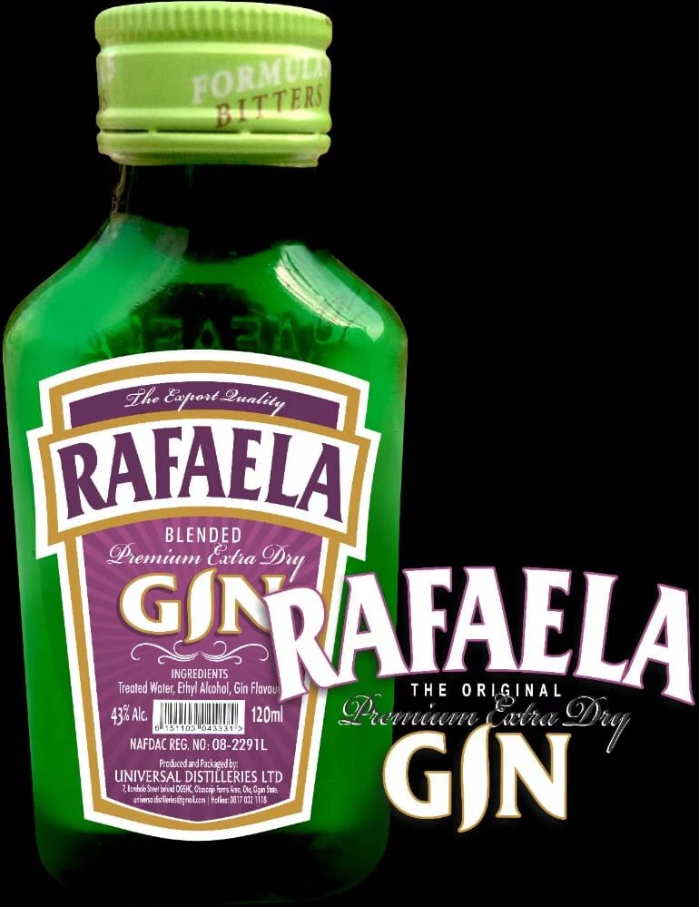
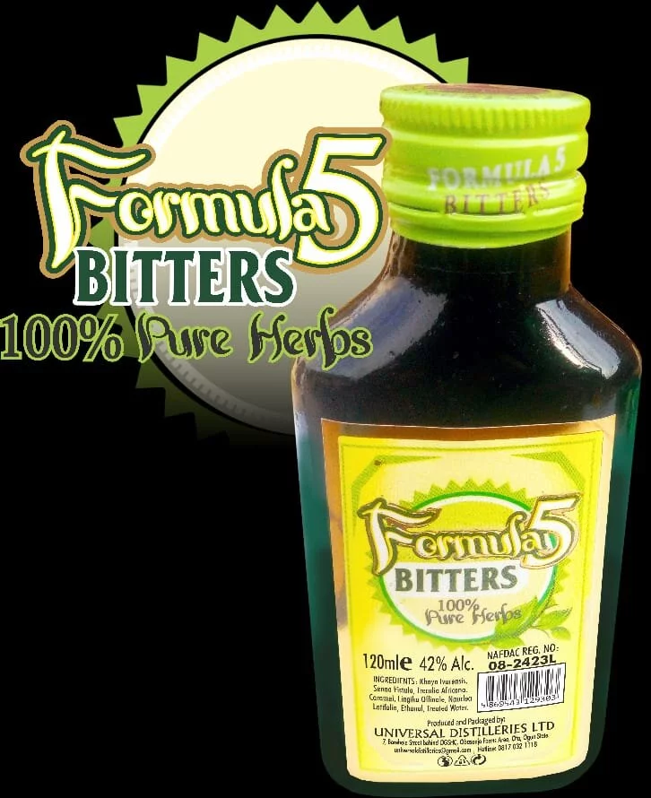
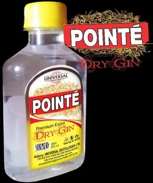
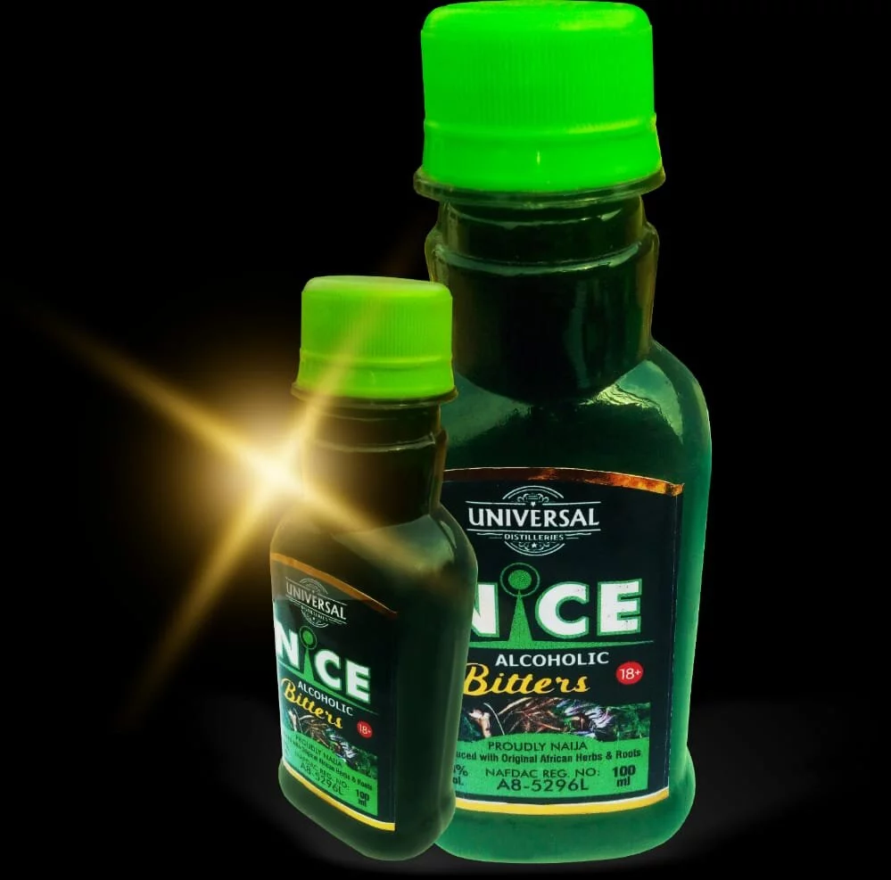
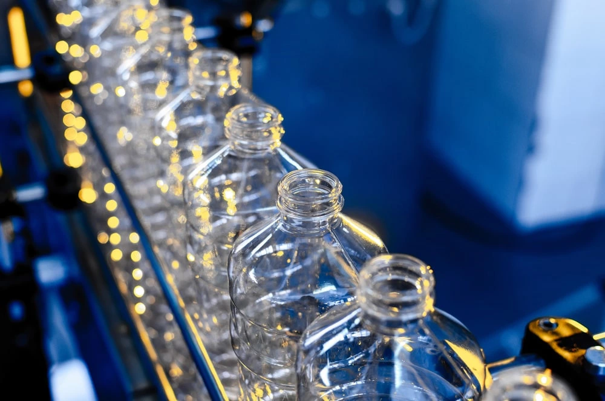

This premium extra dry gin is an exquisite blend of well-researched flavouring ingredients. It leaves you with a taste that keeps you begging for more.
Rafaela has been one of our best-selling brands over a long period of time. Using the finest flavouring ingredients which results in a unique blend, triple-distilled, clear, crisp, strong with smooth compelling taste.
Ce gin extra sec de qualité supérieure est un mélange exquis d'ingrédients aromatisants bien étudiés. Cela vous laisse un goût qui vous incite à en redemander.
Rafaela est l'une de nos marques les plus vendues depuis longtemps. En utilisant le meilleur ingrédient aromatisant, ce qui donne un mélange unique, triple distillé, clair, croquant, fort avec un goût doux et convaincant.

Formula 5 Bitters contains herbs extracts as active ingredients. It works by inhibiting the activities of bacterial and fungal organisms; decreasing the levels of plasma cholesterol and triglycerides. Its flavonoid content is responsible for its antioxidative properties. These Flavonoids also help reduce cancer risk, heart diseases, asthma and stroke.
Formular 5 Bitters is highly effective in improving blood circulation, good health and vitality. This product can be be taken to relieve body aches, menstrual cramps, and improve appetite.
La formule 5 Bitters contient des extraits d'herbes comme ingrédients actifs. Il agit en inhibant les activités des organismes bactériens et fongiques; diminution des taux de cholestérol plasmatique et de triglycérides. Sa teneur en flavonoïdes est responsable de ses propriétés antioxydantes. Ces flavonoïdes aident également à réduire le risque de cancer, les maladies cardiaques, l'asthme et les accidents vasculaires cérébraux.
Formular 5 Bitters est très efficace pour améliorer la circulation sanguine, la bonne santé et la vitalité. Ce produit peut être pris pour soulager les courbatures, les crampes menstruelles et améliorer l'appétit.

This product has 42% alcohol volume with special unique flavours and other blended ingredients that makes it stand out among other brands in the market. It is colorless and has a sweet smell. This product is available in various sizes with yellow cap and red background label.
Ce produit a un volume d'alcool de 42% avec des saveurs uniques spéciales et d'autres ingrédients mélangés qui le distinguent des autres marques du marché. Il est incolore et a une odeur douce. Ce produit est disponible en 100ml (10cl), 200ml (20cl) et 750ml (75cl) avec bouchon orange et étiquette à fond jaune et rouge.

Nice Bitters contains 38% alcohol by volume and formulated from the combination of four powerful roots and leaves (herbal extracts) with menthol flavour blended together. It offers consumers both medicinal/health benefits solutions as well as joyous alcoholic experience. The product cures waste pains, pile and create active body reaction to the consumers.
Nice Bitters has proven to be efffective in improving human capacity, muscle building, sexual arousal and sexual performance. This product contains triterpenes, glycosides and tannins that
This product is available in various sizes with green plastic bottle, lemon green cap and lemon green background label.
Nice Bitters contient 38% d'alcool en volume et est formulé à partir de la combinaison de quatre racines et de feuilles puissantes (extraits d'herbes) avec une saveur de menthol mélangées ensemble. Il offre aux consommateurs à la fois des solutions médicinales / santé et une expérience alcoolique joyeuse. Le produit guérit les douleurs des déchets, empile et crée une réaction corporelle active aux consommateurs.
Ce produit est disponible en bouteille plastique verte de 100ml (1ocl), 200ml (20cl), 375ml (37.5cl) et 750ml (75cl) avec bouchon vert citron et étiquette fond vert citron.

We produce PET bottles of various sizes for a wide range of purposes including the manufacture of table water, yogurt, air freshener and so on. We also customise blow molds for our customers who are interested in brand identity.
We maintain absolute quality in the manufacturing of these bottles and as such are safe to use in packaging water and other consumables.